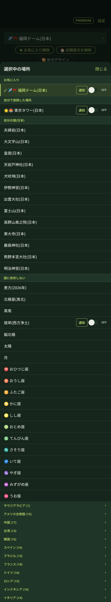
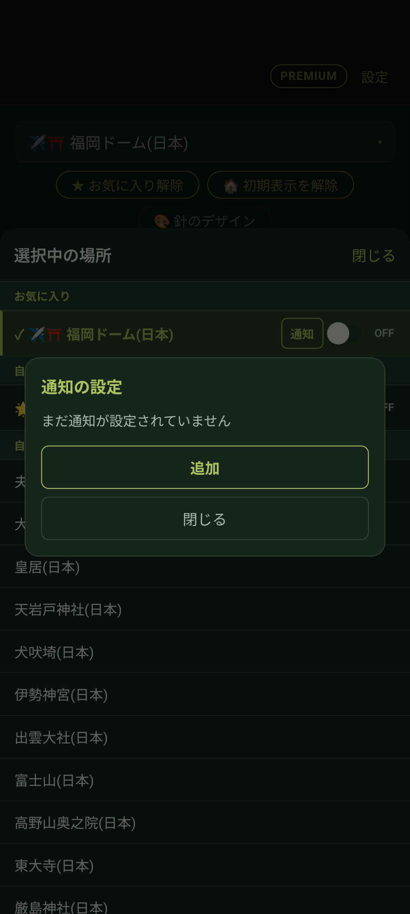
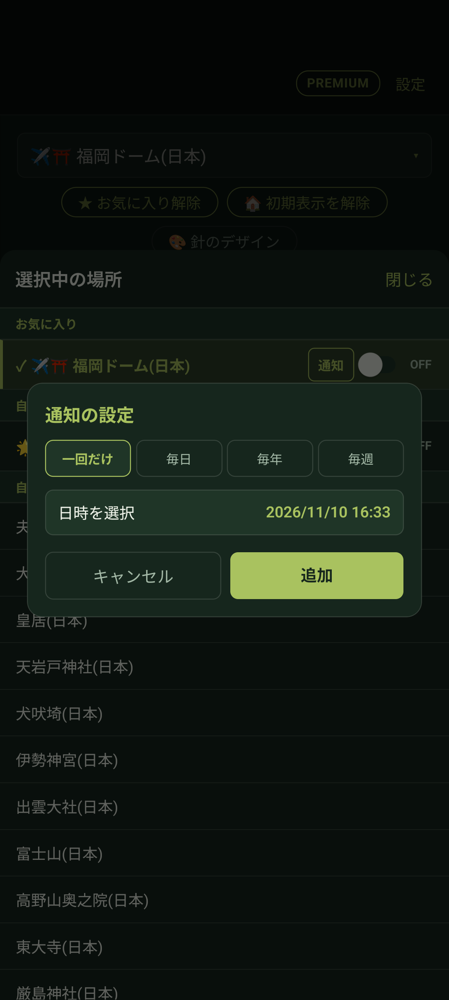

📖 はじめに（この画面でできること）
「選択中の場所」一覧ドロワーでは、あらかじめ用意された多数のプリセット地や、自分で登録した場所を素早く探して切り替えることができます。また、場所ごとに通知スケジュールを設定することも可能です。

🗺️ 1. プリセット目的地の種類と選択
ゆびさすコンパスには、日常やお参り・イベントに役立つ目的地が最初から豊富に登録されています。
国に依存しない共通の目的地
・恵方（年毎に自動計算）： 今年の恵方を自動で算出して表示します。
・北極星（真北） / 真南 / 磁北極： 方位の基準点を確認できます。
・彼岸（西方浄土）： 春分・秋分の日の入り方角（真西）の確認に便利です。
・太陽 / 月： 現在時刻の太陽や月の位置をリアルタイムに指し示します。
・12星座（おひつじ座〜うお座）： 夜空に浮かぶ各星座の方角をリアルタイムに案内します。
自分の国（日本）の神社仏閣・名所
夫婦岩、大文字山、皇居、天岩戸神社、犬吠埼、伊勢神宮、出雲大社、富士山、高野山奥之院、東大寺、厳島神社、熊野本宮大社、明治神宮など、日本を代表する名所・パワースポットが揃っています。
世界各国の聖地・名所
サウジアラビア（メッカのカアバ神殿/キブラ）、アメリカ、中国、台湾、韓国、スペイン、フランス、ドイツなど世界各国の名所をアコーディオンから展開して選択できます。
⏰ 2. スケジュール通知予約の設定
特定の場所を向きたい日時が決まっている場合、通知をスケジュール登録しておけば、忘れることなくコンパスを起動できます。


場所の横にある「通知」スイッチをタップ
目的地リストの中で、通知を設定したい場所の右側にある「通知」ボタンをタップします。
「追加」ボタンをタップ
「通知の設定」ダイアログが表示されたら、「追加」ボタンを押します。
繰り返しの頻度を選択
・一回だけ： 特定の日時（例：ライブ開演時刻、イベント日など）に1度だけ通知
・毎日： 毎日の決まった時間（例：朝のお祈り、日課の礼拝など）に通知
・毎年： 記念日や節分など、年に1度のイベントに合わせて通知
・毎週： 決まった曜日の時刻に定期通知
日時を指定して「追加」をタップ
日付や時刻を選択し、「追加」ボタンを押すと通知スケジュールが確定します。
🚀 3. 通知からのワンタップ起動
指定した時刻になると、スマートフォンに通知メッセージが届きます。
通知をタップするとその目的地が自動で選択された状態でアプリが起動するため、メニューから探す手間なく、すぐにその方角を向くことができます。
❓ よくある質問
はい。場所一覧にある「通知」のトグルスイッチをOFFにするだけで、設定したスケジュールを削除することなく一時的に通知を停止できます。
通知設定ダイアログを開き、登録されているスケジュール一覧から該当の項目をタップして削除できます。